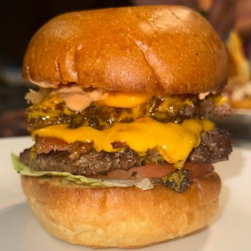

Lady fingers (dependent on layers wanted and size of pan used)
Cocoa powder
Instructions:
Take the sugar and egg yolks and whisk it and temper over a double boiler
Once its tempered and cool, in a separate pot whisk the mascarpone and the cream. Combine the two pots
Combine coffee and coffee liquor
Dip the lady fingers into the coffee for 5 seconds
Begin layering starting with lady fingers then a layer of the mascarpone mixture altering until the pan is filled.
Put in the fridge for 30 minutes
Take out from fridge, top with coco powder, and enjoy!
Smash Burger

Ingredients:
1 pound of ground beef
Brioche buns
Lettuce
American cheese slices
Tomatoes
1 whole yellow onion
Olive oil
Hamburger Seasoning
Bacon
Instructions:
Add all the ground beef to a skillet with olive oil. Cook until meet is no longer pink.
In a different pan, add one whole onion with some olive oil and cook down until its translucent.
Now it is time to cook the bacon! Cook the bacon in olive oil until nice and crispy
Toast the buns in the oven until golden brown
Now it’s time to assemble! First add the lettuce and tomatoes, then one burger patty,
then a piece of bacon and on top of that add cheese and top with the sauteed onions.